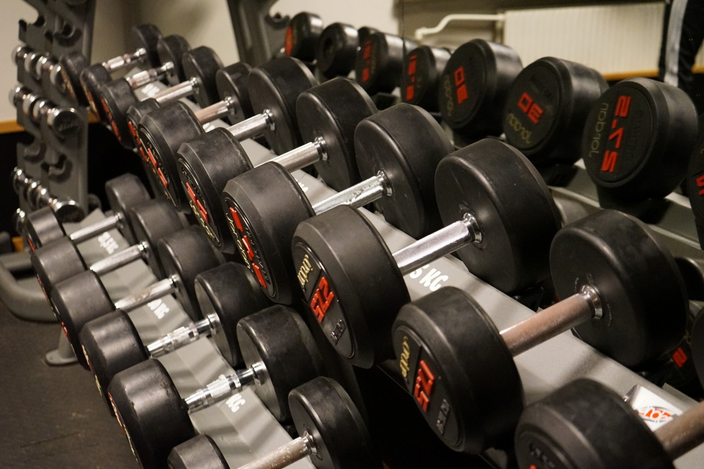

Blog Posts
-

The basic principle of skinny to muscle
Muscle training alone does not increase weight. The real cause is dietary habits.First, the most important thing is that calorie intake exceeds calorie consumption....
-

Characteristics of the three major nutrients and ideal intake balance.
The three major nutrients are proteins, carbohydrates, and lipids. In order to increase muscle....
-

Training equipment and menu
The following equipment is required for muscle training at home.Dumbbell.Recently, a type that can switch weight with one touch has appeared. The price is high, ...
Categories
Block Contents
BMC
Basal metabolism calculations are automatically displayed on recently sold scales. There are also sites that automatically calculate the necessary data.
The calorie balance
Protein is twice the weight value Lipid is 25% of total calories Carbohydrates are total calories minus protein and fat calories.
Training Menus
Relationship between training frequency and load: Increasing the number of times with a lightweight does not increase muscle mass.